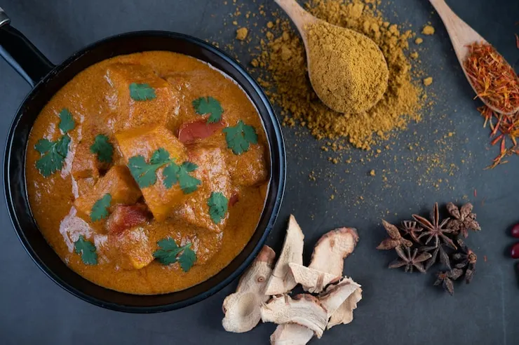

Curry
Home

Ingredients
- 1 lb chicken breast, cut into bite-sized pieces
- 2 tbsp vegetable oil
- 1 onion, chopped
- 2 cloves garlic, minced
- 1 tbsp ginger, grated
- 2 tbsp curry powder
- 1 can (14 oz) coconut milk
- 1 cup chicken broth
- 1 cup diced tomatoes
Instructions
- Heat oil in a large skillet over medium heat. Add onion, garlic, and ginger; sauté until onion is translucent.
- Add chicken pieces and cook until browned on all sides.
- Stir in curry powder and cook for 1 minute to release flavors.
- Add coconut milk, chicken broth, and diced tomatoes. Bring to a boil, then reduce heat and simmer for 20-25 minutes, or until chicken is cooked through and sauce has thickened.
- Serve over steamed rice or with naan bread.